Monaco，一个路径一个 model
自动保存、磁盘变更检测、未保存关闭确认。主题从 CSS 变量算出来，切主题即刻跟着变。
Claude Code、Codex、Gemini CLI、Qwen Code 在同一个窗口里跑。一个会话可以从 Codex 交给 Claude 继续做；一个 agent 记下的坑，另一个开口就知道；换 API key 或中转地址不用重启会话。全部在你自己的机器上。
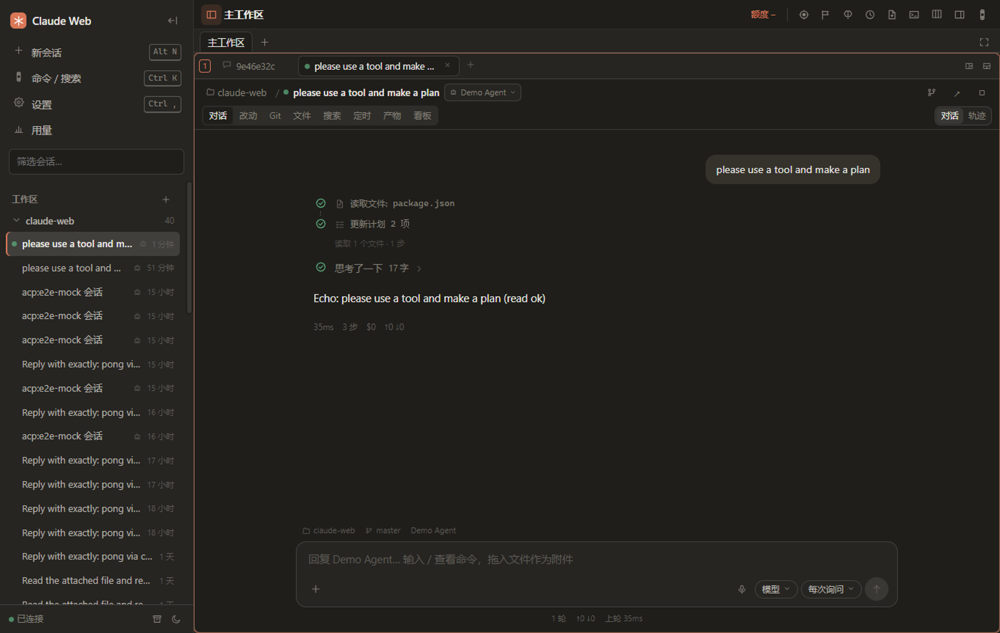
每一轮在界面里都是一条时间线：完成的步骤是空心勾，正在跑的是呼吸的方块加计时，还没到的是灰圈。左边这五步就是一轮里会发生的事，点任意一步看对应的画面。
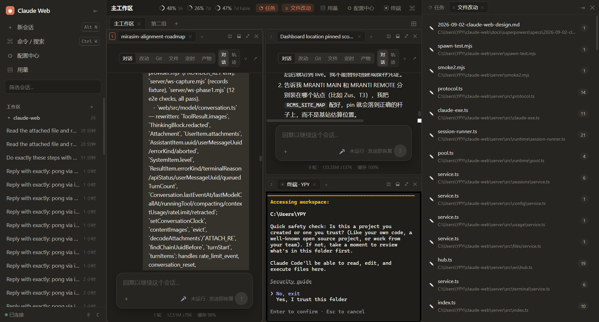
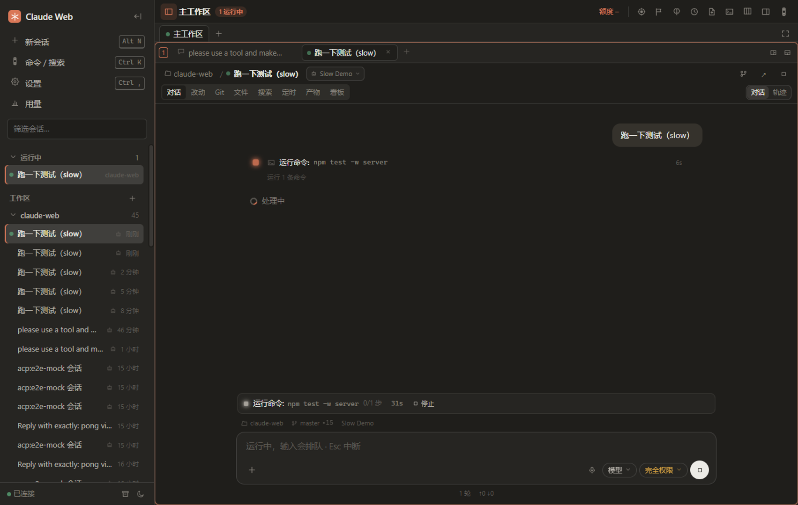
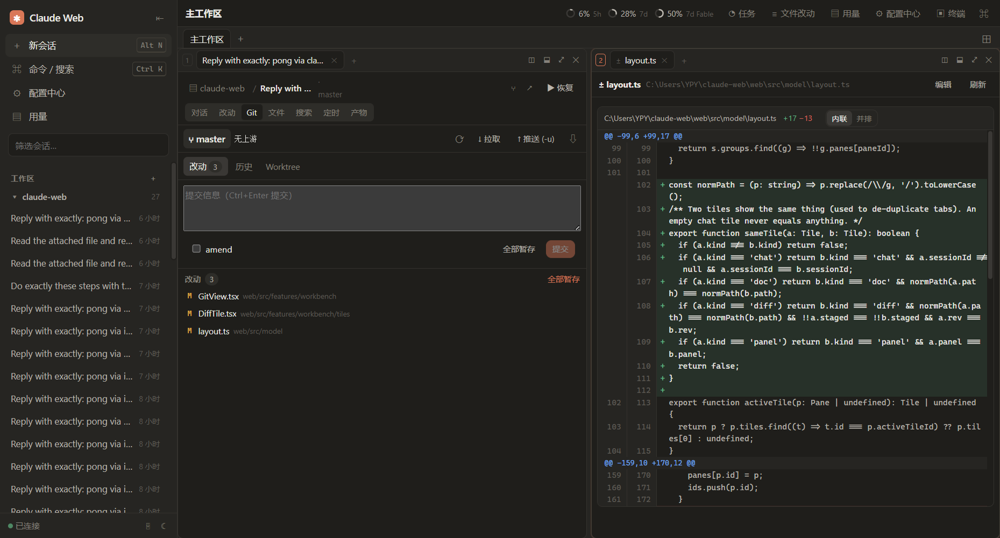
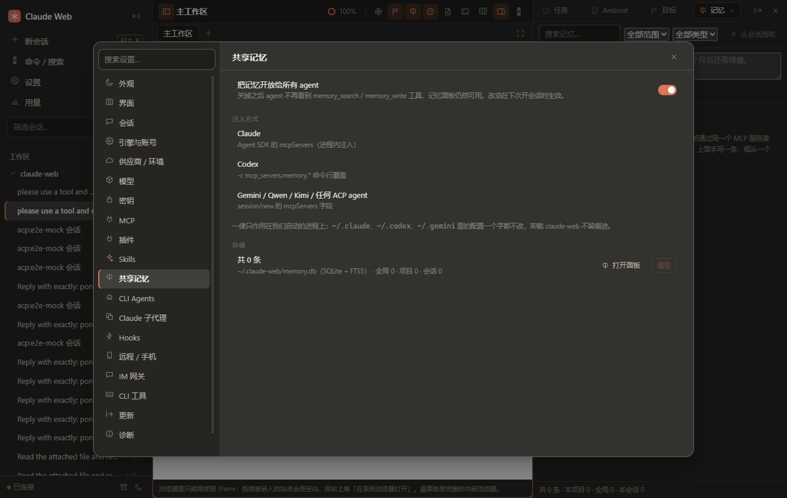
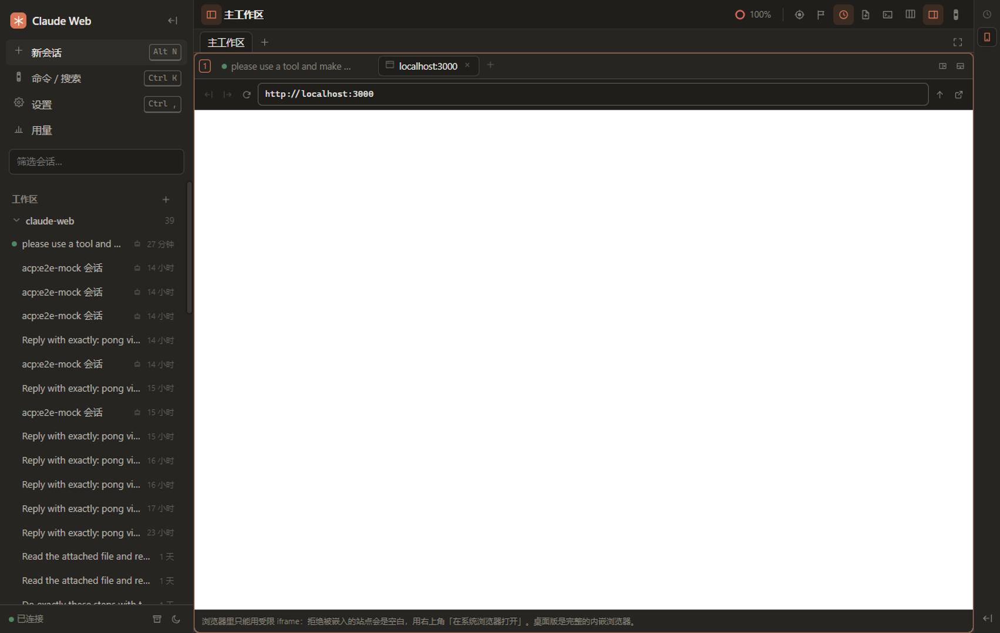
运行卡钉在输入框上方：正在做什么、多久、第几步、停止。工具行自己数秒，agent 不发进度也不会停在 0s。
这是这套系统和「多开几个终端」的区别。三件事共用一条规范时间线：每个 agent 的会话都被镜像成 provider 无关的事件流，只留能跨厂商的东西。
切换 agent 时，从规范时间线生成一份结构化简报：已经决定了什么、磁盘上改了哪些文件、试过又失败的方案、当前目标。Claude 走 Agent SDK 受支持的 SessionStore 原生续接，其它 agent 把简报当第一条消息收下。会话 id 不变，侧栏里还是同一条。
## 交接简报 目标 把 dock 最小化改成 CSS 收起 已改 Dock.tsx (+41 −78) · styles.css (+12) 失败 display:none 会卸载终端 → 放弃 注意 推理过程没有跟过来（跨厂商不可携带）
不碰 Codex 的 rollout 文件，不伪造 ~/.claude/projects。thinking 一律不带：Claude 的带签名、Codex 的是加密的，跨厂商必然失效。
供应商档案（base URL + key + 模型映射）只注入到那个会话的进程里，不写你的 ~/.claude/settings.json。切换是一次你看不见的重启：停子进程、用新 env 重开、从最后一个 uuid 原生 resume。历史、面板、草稿全在，时间线里多一条「已切换到 …」。
档案 super-nb → api.super-nb.me 档案 claude.ai → 官方登录 session.setProvider ⟳ 0.8s ✓ 同一个 session id · 历史连续
密钥用 Windows DPAPI / macOS 钥匙串加密存放，wire 上一律打码。中转指纹过不了 ccb 时自动退回官方二进制。
记忆库是自建的：SQLite + FTS5，就在 ~/.claude-web/memory.db。以 MCP 暴露 memory_search / memory_write / memory_list，注入到我们启动的每个 agent 进程里 —— Claude 走 SDK、Codex 走 -c 覆盖、ACP agent 走 session/new。会话结束还能自动萃取决定、约束、死路。
[constraint] 停靠面板最小化时绝对不能卸载面板 [deadend] :focus outline:none 再补 focus-visible [decision] 模型表统一放 models/catalog.ts 来自 claude · 命中 2
不改 ~/.claude、~/.codex、~/.gemini 里的任何配置。卸载 Claude Web，什么都不留下。
卡片上直接允许或拒绝权限、中断、跳转。需要你的排最前。
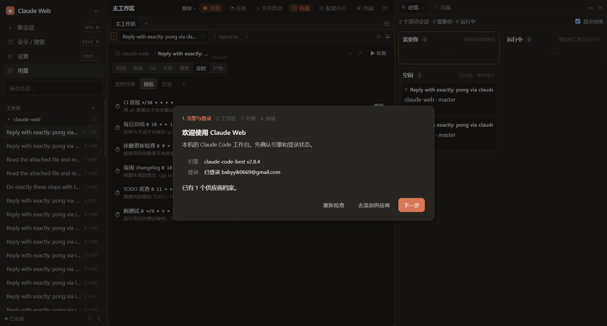
自动保存、磁盘变更检测、未保存关闭确认。主题从 CSS 变量算出来，切主题即刻跟着变。
大小写 / 全词 / 正则 / include / exclude，替换可逐行排除。文件树带 git 徽章、回收站、内联重命名。
GitHub 与 GitLab，按审查状态分列。PR 检出到 worktree 再开会话，「审查」提示自动发过去。
/goal 把测试全修绿。活规格随时改，下一轮生效；证据（改过的文件、跑过的命令、提交）自动收集。
CI 巡检、每日总结、依赖更新检查、TODO 巡查……每次运行留一条结果摘要。
Fable 5.1 而不是 Fable。每个模型自己的 effort 档位；ultracode 是会话级开关，不是 effort 里的一档。Codex 的 ultra 才是真的枚举值。
读 CLI 同源的账号额度；每个 result 记一行：延迟、缓存读写、费用、失败原因，可导出 CSV。
内置约 27 个常用 MCP 服务器配置，官方注册表搜索，健康检查。Skills 支持 GitHub 子目录与本地路径。
Telegram、Discord、Slack、飞书、钉钉、企业微信。权限请求变成「允许 / 拒绝」按钮，AskUserQuestion 变成选项按钮。
/new /use /status /stop 切换未授权用户一小时只提示一次，/pair 配对码 加入面板里 0.9s 一帧，点击就是 tap，拖动就是 swipe。给做 App 的会话看真机。
一个 Node 进程驱动所有 agent，一条 WebSocket 推给前端。桌面版只是给它套了个壳。
自带 Claude Code 引擎（claude-code-best，找不到就退回官方 claude.exe），托盘常驻，多窗口，关闭不退出继续跑会话。
ClaudeWeb-0.1.0-win-x64.exe NSIS 安装 ClaudeWeb-0.1.0-portable.exe 免安装下载 Windows 版
macOS / Linux 暂无安装包，用下面的浏览器模式。
本机 127.0.0.1:3090。开发模式 server 热重载、前端走 Vite。
npm install npm run build npm start → http://127.0.0.1:3090
用你已经登录的 Claude Code 账号；Codex / Gemini 各自的 CLI 装好并登录即可被识别。
设置 → 远程 / 手机 打开局域网监听，生成 6 位配对码和二维码。手机上是抽屉式单列布局。
远程监听 0.0.0.0:3091 配对码 482 913 10 分钟 · 5 次 设备令牌 只存 sha256
出门在外走 SSH 隧道到远程主机，或者干脆在 Telegram 里回。
Claude Web 不接自己的服务器。模型调用走你自己的账号或 API；会话记录由各家 CLI 自己写，我们只在旁边镜像一份规范时间线。所有它自己产生的东西都在一个目录里，删掉就干净。
主题只定义十几个原色，表面、描边、文字层级全部从中派生。所以每个主题都完整，包括 Monaco 和代码高亮。
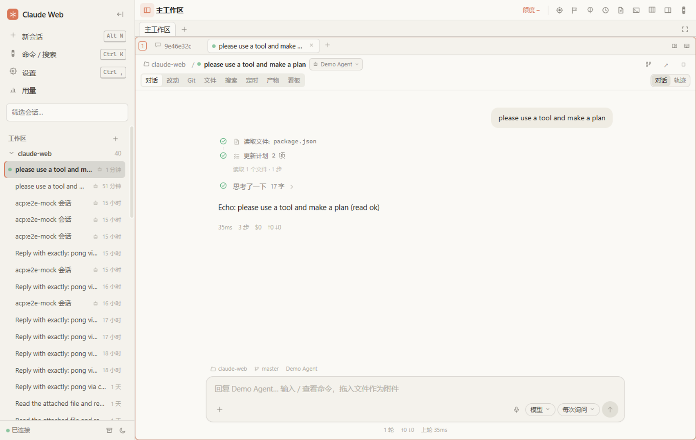
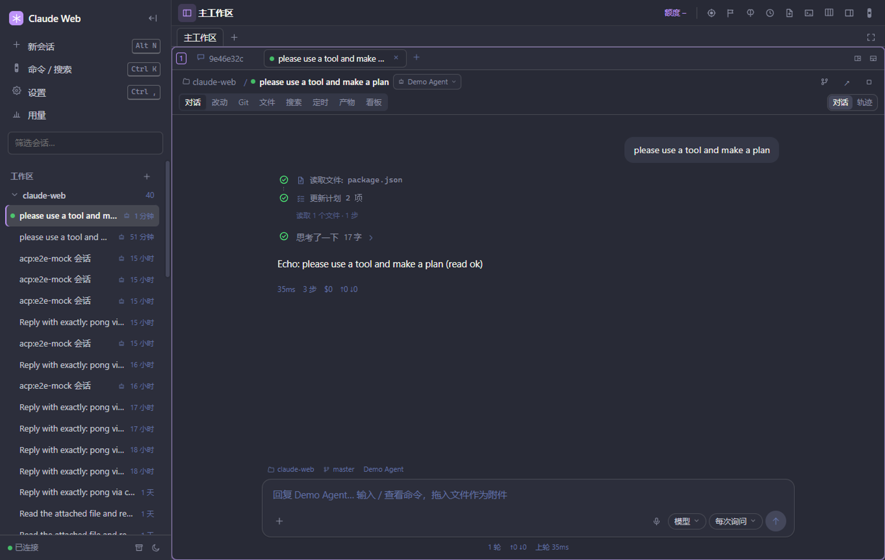
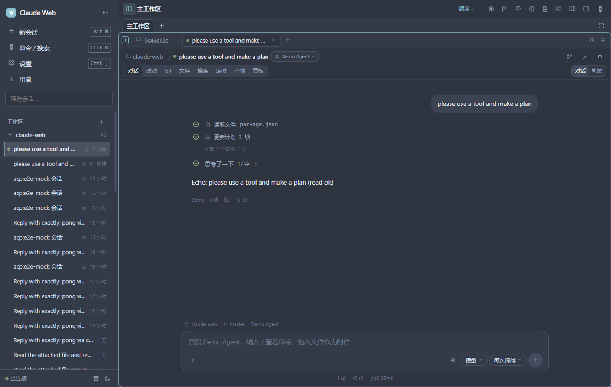
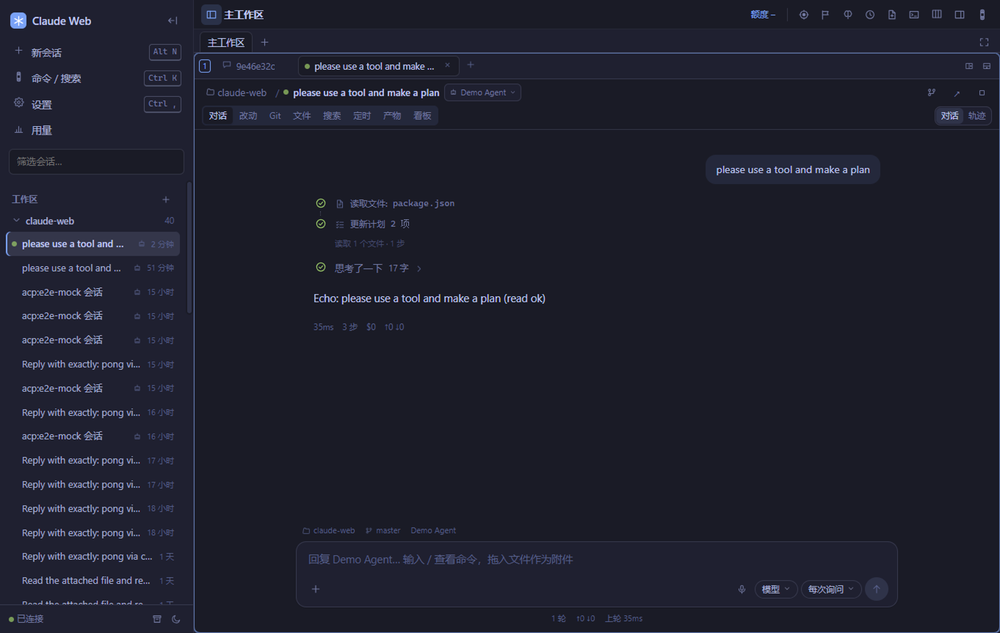
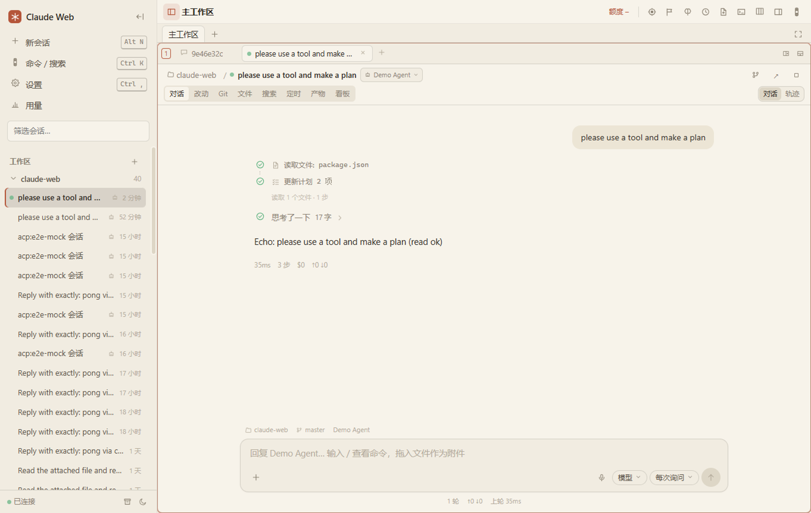
Claude Web 本身不收费，也没有账号系统。模型用你自己的 Claude 订阅、API key 或中转；Codex、Gemini 用各自 CLI 的登录。
能，但要说清楚带过去的是什么：用户消息、回复正文、工具调用和结果、磁盘现状，会被整理成一份简报。推理过程（thinking / reasoning）带不过去，任何厂商都做不到，OpenAI 官方的导入器同样是降级成纯文本。
不会。供应商 env 只注入到我们启动的那个会话进程；记忆 MCP 也只注入到我们启动的进程。你在终端里直接用 claude 或 codex 时，看到的还是你自己的配置。
目前只打了 Windows 的安装包。macOS 和 Linux 用浏览器模式：npm start 后开 127.0.0.1:3090，功能一样，少的只是托盘和内嵌浏览器的 webview（退化成受限 iframe）。